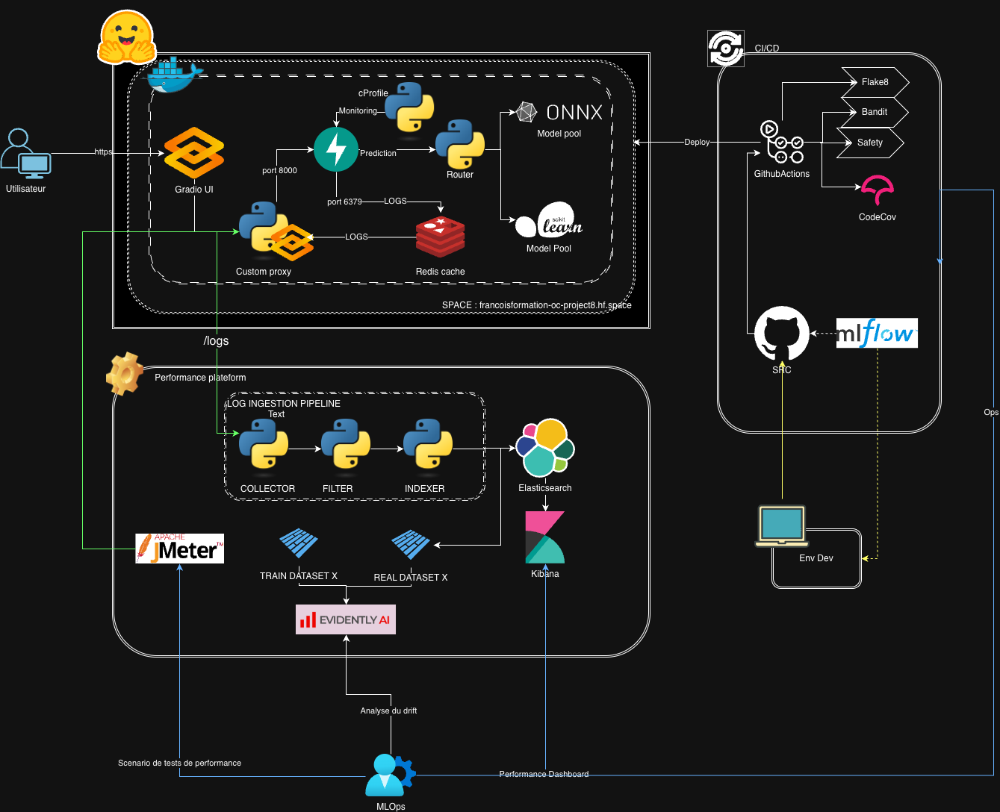

Architecture Technique du Projet MLOps¶
Vue d’ensemble¶
Ce document décrit l’architecture technique complète du projet, incluant les composants, les flux de données et les interactions entre les différents services.
Table des matières¶
Architecture globale¶

Composants principaux¶
1. Interface utilisateur (Gradio + FastAPI)¶
Localisation :
src/ui/app.py- Interface Gradiosrc/ui/fastapi_app.py- Application FastAPI+Gradio hybride (HuggingFace Spaces)src/ui/api_routes.py- Routes API REST
Deux modes de déploiement :
Mode 1: Gradio standalone (développement local)¶
Gradio UI (Port 7860) → API FastAPI (Port 8000)
Mode 2: FastAPI+Gradio hybride (HuggingFace Spaces)¶
FastAPI (Port 7860)
├── /api/* → Endpoints REST (curl, HTTP)
└── / → Interface Gradio UI
Responsabilités :
Interface web intuitive pour les utilisateurs finaux
Formulaire de saisie des données patient (14 features)
Communication avec l’API FastAPI (proxy client)
Affichage des résultats de prédiction
[NOUVEAU] Accès HTTP direct sans client Gradio (HF Spaces)
Technologies :
Gradio 4.0+
FastAPI 0.104+
Python 3.13+
Endpoints exposés :
Endpoint |
Type |
Description |
|---|---|---|
|
Gradio UI |
Interface principale |
|
Gradio |
Endpoint pour le pipeline de logs |
|
REST |
Health check (HF Spaces) |
|
REST |
Prédiction ML (HF Spaces) |
|
REST |
Probabilités (HF Spaces) |
|
REST |
Récupération logs (HF Spaces) |
Documentation complète: DIRECT_HTTP_ACCESS.md
Flux de données :
Utilisateur → Formulaire Gradio → Validation → HTTP POST → API FastAPI
↓
Utilisateur ← Affichage résultat ← JSON Response ← Prédiction ML ←
OU (HuggingFace Spaces):
curl/HTTP → /api/predict → API Proxy → API FastAPI (8000) → Résultat JSON
2. API REST (FastAPI)¶
Localisation : src/api/main.py
Responsabilités :
Exposition des endpoints REST
Validation des données (Pydantic)
Orchestration des prédictions
Gestion des logs (Redis)
Monitoring des performances
Endpoints :
Endpoint |
Méthode |
Description |
Documentation |
|---|---|---|---|
|
GET |
Informations API |
|
|
GET |
Health check |
|
|
POST |
Prédiction simple |
|
|
POST |
Prédiction avec probabilités |
|
|
GET |
Récupération des logs |
|
|
DELETE |
Suppression des logs Redis |
|
|
GET |
Statistiques des logs |
|
|
GET |
Statistiques du pool de modèles |
Section 3.5 ci-dessous |
Middlewares :
CORS (toutes origines en développement)
Logging middleware (transaction ID, timing)
Performance monitoring (cProfile)
Configuration :
# Variables d'environnement (.env)
MODEL_PATH=./model/model.pkl
MODEL_POOL_SIZE=4 # Nombre d'instances du modèle
API_HOST=0.0.0.0
API_PORT=8000
REDIS_HOST=localhost
REDIS_PORT=6379
REDIS_DB=0
LOG_TO_REDIS=true
REDIS_LOGS_MAX_SIZE=1000
ENABLE_PERFORMANCE_MONITORING=true
3. Modèle ML (scikit-learn)¶
Localisation : src/model/
Architecture :
model_loader.py → Singleton pattern pour chargement unique (mode legacy)
model_pool.py → Pool de modèles pour parallélisme (mode actif)
predictor.py → Orchestration prédiction + feature engineering
feature_engineering.py → Calcul des 14 features dérivées
Features :
Type |
Nombre |
Description |
|---|---|---|
Entrée |
14 |
Fournies par l’utilisateur |
Dérivées |
14 |
Calculées automatiquement |
Total |
28 |
Utilisées par le modèle |
Détails : FEATURE_ENGINEERING.md
3.5. Model Pool (Parallélisme)¶
Fichier : src/model/model_pool.py
Objectif : Permettre le traitement parallèle de plusieurs requêtes de prédiction en maintenant plusieurs instances du modèle ML en mémoire.
Architecture du Pool :
┌─────────────────────────────────────────────────────────┐
│ ModelPool (Singleton) │
├─────────────────────────────────────────────────────────┤
│ │
│ ┌──────────────────────────────────────────────────┐ │
│ │ Queue (Thread-safe) │ │
│ │ ┌────────┐ ┌────────┐ ┌────────┐ ┌────────┐│ │
│ │ │Model #0│ │Model #1│ │Model #2│ │Model #3││ │
│ │ └────────┘ └────────┘ └────────┘ └────────┘│ │
│ └──────────────────────────────────────────────────┘ │
│ │
│ Methods: │
│ • initialize(pool_size, model_path) │
│ • acquire(timeout) → ModelInstance │
│ • acquire_async(timeout) → ModelInstance │
│ • release(instance) │
│ • get_stats() → dict │
└─────────────────────────────────────────────────────────┘
↓ ↓
┌──────────────────────┐ ┌──────────────────────┐
│ ModelInstance #0 │ │ ModelInstance #N │
│ • model (copy) │ │ • model (copy) │
│ • instance_id │ │ • instance_id │
│ • lock (thread) │ │ • lock (thread) │
│ • usage_count │ │ • usage_count │
│ • predict() │ │ • predict() │
│ • predict_proba() │ │ • predict_proba() │
└──────────────────────┘ └──────────────────────┘
Patterns utilisés :
Object Pool Pattern : Réutilisation d’instances pré-créées
Singleton Pattern : Une seule instance du pool
Thread-Safety : Lock par instance + Queue thread-safe
Async Context Manager : Acquisition/libération automatique
Configuration :
# .env
MODEL_POOL_SIZE=4 # Nombre d'instances du modèle (défaut: 4)
Initialisation au démarrage de l’API :
# src/api/main.py
@asynccontextmanager
async def lifespan(app: FastAPI):
global model_pool, feature_engineer
# Initialisation du pool
model_pool = ModelPool()
model_pool.initialize(
pool_size=settings.MODEL_POOL_SIZE,
model_path=settings.MODEL_PATH
)
feature_engineer = FeatureEngineer()
yield
# Affichage des stats au shutdown
stats = model_pool.get_stats()
logger.info(f"Statistiques du pool: {stats}")
Utilisation dans les endpoints :
# Acquisition avec context manager (recommandé)
async with ModelContextManager(timeout=30.0) as model_instance:
processed_data = feature_engineer.engineer_features(patient_dict)
prediction = model_instance.predict(processed_data)
proba = model_instance.predict_proba(processed_data)
# L'instance est automatiquement libérée après le bloc
Mécanisme de copie des modèles :
Les instances sont créées via pickle.loads(pickle.dumps(base_model)) :
Chaque instance est une copie profonde indépendante
Pas de partage de mémoire entre instances
Permet le vrai parallélisme (pas de GIL blocking)
Thread-Safety :
class ModelInstance:
def predict(self, data):
with self.lock: # Acquisition du lock thread
self.usage_count += 1
return self.model.predict(data)
Endpoint de monitoring :
GET /pool/stats
Response:
{
"pool_enabled": true,
"stats": {
"pool_size": 4,
"available": 3,
"in_use": 1,
"total_predictions": 1523,
"avg_usage_per_instance": 380.75,
"model_path": "./model/model.pkl"
}
}
Métriques du pool :
Métrique |
Description |
|---|---|
|
Nombre total d’instances |
|
Instances disponibles |
|
Instances en cours d’utilisation |
|
Total de prédictions effectuées |
|
Moyenne d’utilisation par instance |
Fallback mode singleton :
Si l’initialisation du pool échoue, l’API bascule automatiquement en mode singleton :
try:
model_pool.initialize()
except Exception as e:
logger.error(f"Pool init failed: {e}")
# Fallback to singleton
model_loader = ModelLoader()
predictor = Predictor()
Avantages du pool :
Avant (Singleton) |
Après (Pool) |
|---|---|
❌ 1 seule requête à la fois |
✅ 4 requêtes simultanées (configurable) |
❌ Latence élevée sous charge |
✅ Latence optimisée |
❌ Throughput limité |
✅ Throughput x4 |
⚠️ GIL blocking |
✅ Vrai parallélisme |
Tests :
Couverture : 90.99% (111 lignes, 10 lignes non couvertes)
Tests unitaires :
tests/model/test_model_pool.py(18 tests)Tests de charge :
make simulate-load(1000 requêtes)
Processus de prédiction avec pool :
HTTP Request → FastAPI Endpoint
↓
async with ModelContextManager() as instance
↓
Pool.acquire_async(timeout=30.0)
↓
Queue.get() → ModelInstance disponible
↓
Feature Engineering (14 → 28 features)
↓
ModelInstance.predict(data) [avec lock thread]
↓
Pool.release(instance)
↓
HTTP Response
Temps de réponse typique : 20-60ms (avec pool actif)
4. Cache Redis¶
Localisation : Redis standalone (Docker ou local)
Responsabilités :
Stockage temporaire des logs API
FIFO (First In First Out) avec limite configurable
Consultation via endpoint
/logsSource de données pour le pipeline Elasticsearch
Structure des logs :
{
"timestamp": "2024-11-20T10:30:45.123456",
"level": "INFO",
"message": "[transaction_id] POST /predict - 200 - 45ms - input - result",
"data": {
"transaction_id": "uuid",
"input_data": {...},
"result": {...},
"performance_metrics": {...}
}
}
Configuration :
Limite : 1000 logs (configurable via
REDIS_LOGS_MAX_SIZE)Clé Redis :
api_logsFormat : Liste (LPUSH/LRANGE)
5. Pipeline de logs Elasticsearch¶
Localisation : src/logs_pipeline/
Architecture :
collector.py → Récupération des logs depuis Redis ou Gradio
↓
filter.py → Filtrage des logs pertinents
↓
indexer.py → Triple indexation Elasticsearch
↓
pipeline.py → Orchestration du processus complet
Flux détaillé :
┌─────────────────────────────────────────────────────────────────┐
│ SOURCES DE LOGS │
├────────────────────────┬────────────────────────────────────────┤
│ Redis (API logs) │ Gradio (/logs_api endpoint) │
└────────────────────────┴────────────────────────────────────────┘
↓
┌─────────────────┐
│ COLLECTOR │
│ - Connexion │
│ - Déduplication│
│ - Parsing │
└─────────────────┘
↓
┌─────────────────┐
│ FILTER │
│ - Pattern match│
│ - HTTP method │
│ - Performance │
└─────────────────┘
↓
┌─────────────────────────────────────┐
│ INDEXER │
│ │
│ ┌───────────────────────────────┐ │
│ │ ALL_DOCUMENTS (non filtrés) │ │
│ └───────────────────────────────┘ │
│ ↓ │
│ ┌───────────────────────────────┐ │
│ │ ml-api-logs (TOUS) │ │
│ └───────────────────────────────┘ │
│ │
│ ┌───────────────────────────────┐ │
│ │ FILTERED_DOCUMENTS (filtrés) │ │
│ └───────────────────────────────┘ │
│ ↓ ↓ │
│ ┌─────────────┐ ┌──────────────┐ │
│ │ml-api-message│ │ml-api-perfs │ │
│ └─────────────┘ └──────────────┘ │
└─────────────────────────────────────┘
↓
┌─────────────────┐
│ ELASTICSEARCH │
│ 3 index créés │
└─────────────────┘
Quadruple indexation :
ml-api-logs : TOUS les logs sans filtrage
Usage : Débogage complet, audit
Contenu : Tous les champs bruts
ml-api-message : Logs filtrés avec données de prédiction
Usage : Analyse du drift de données
Contenu : input_data, result, transaction_id
ml-api-perfs : Logs filtrés avec métriques de performance
Usage : Optimisation du modèle
Contenu : inference_time_ms, cpu_time_ms, memory_mb, etc.
ml-api-top-func : Top fonctions coûteuses par transaction
Usage : Profiling détaillé, optimisation du code
Contenu : transaction_id, function_name, cumulative_time, calls, etc.
Documentation complète : src/logs_pipeline/README.md
6. Elasticsearch + Kibana¶
Elasticsearch (Port 9200) :
Stockage persistant des logs
Recherche full-text
Agrégations pour dashboards
Kibana (Port 5601) :
Visualisation des logs
Création de dashboards
Exploration des données
Index patterns recommandés :
ml-api-logs*: Tous les logsml-api-message*: Logs de prédictionsml-api-perfs*: Métriques de performanceml-api-top-func*: Profiling fonctions
Dashboards recommandés :
Dashboard Prédictions :
Nombre de prédictions par heure
Distribution des résultats (YES/NO)
Top 10 features les plus fréquentes
Temps de réponse moyen
Dashboard Performance :
Latence moyenne (p50, p95, p99)
CPU usage
Mémoire utilisée
Top fonctions coûteuses
Documentation : PERFORMANCE_METRICS.md
Déploiement HuggingFace Spaces¶
Architecture hybride FastAPI + Gradio¶
Le projet utilise une architecture hybride innovante pour le déploiement sur HuggingFace Spaces, permettant l’accès HTTP/REST direct sans client Gradio.
┌─────────────────────────────────────────────────────────────┐
│ HuggingFace Space (Port 7860) │
├─────────────────────────────────────────────────────────────┤
│ │
│ ┌────────────────────────────────────────────────────┐ │
│ │ FastAPI (Application principale) │ │
│ │ │ │
│ │ Endpoints REST API (/api/*) │ │
│ │ ├── GET /api/health │ │
│ │ ├── GET /api/ │ │
│ │ ├── POST /api/predict │ │
│ │ ├── POST /api/predict_proba │ │
│ │ ├── GET /api/logs │ │
│ │ └── DELETE /api/logs │ │
│ │ │ │
│ └────────────────────────────────────────────────────┘ │
│ ↑ │
│ │ gr.mount_gradio_app() │
│ ↓ │
│ ┌────────────────────────────────────────────────────┐ │
│ │ Gradio UI (Interface montée sur /) │ │
│ │ - Formulaire de prédiction │ │
│ │ - Affichage résultats │ │
│ └────────────────────────────────────────────────────┘ │
│ │
└─────────────────────────────────────────────────────────────┘
↓
Proxy vers API interne
↓
┌──────────────────┐
│ API FastAPI │
│ (Port 8000) │
│ - Modèle ML │
│ - Redis logs │
└──────────────────┘
Composants du déploiement¶
Fichiers clés :
Fichier |
Rôle |
|---|---|
|
App FastAPI principale avec Gradio monté |
|
Définition des routes REST (référence) |
|
Client HTTP pour communiquer avec l’API (port 8000) |
|
Dockerfile HuggingFace avec start.sh |
Avantages de cette architecture¶
Avant |
Après |
|---|---|
❌ Client Gradio Python requis |
✅ Accès HTTP standard (curl, fetch, requests) |
❌ Format propriétaire Gradio |
✅ Format JSON REST standard |
❌ Intégration difficile |
✅ Compatible tous langages (Python, JS, R) |
⚠️ UI seulement |
✅ UI ET API REST |
Utilisation¶
Via l’interface web :
https://francoisformation-oc-project8.hf.space/
Via API REST :
# Health check
curl https://francoisformation-oc-project8.hf.space/api/health
# Prédiction
curl -X POST https://francoisformation-oc-project8.hf.space/api/predict \
-H "Content-Type: application/json" \
-d '{"AGE": 65, "GENDER": 1, "SMOKING": 1, ...}'
Documentation complète :
DIRECT_HTTP_ACCESS.md - Guide complet (550 lignes)
QUICK_START_HTTP_ACCESS.md - Quick start (5 min)
PROXY_REFACTOR_SUMMARY.md - Résumé technique
Migration Elasticsearch¶
Script de migration¶
Le projet inclut un script complet de migration Elasticsearch/Kibana (scripts/migrate_elasticsearch.py) permettant de:
✅ Exporter/Importer les index Elasticsearch (mapping + documents)
✅ Exporter/Importer les dataviews (index patterns) Kibana
✅ Exporter/Importer les dashboards et visualisations Kibana
✅ Backup/Restore complets avec timestamp
Cas d’usage¶
1. Sauvegarde quotidienne automatisée :
# Export complet
python scripts/migrate_elasticsearch.py export --output ./backup
# Structure créée
backup_20250121_153000/
├── indexes/ # Index ES avec documents (NDJSON)
├── dataviews/ # Index patterns Kibana
├── dashboards/ # Dashboards + visualizations
└── migration_stats.json
2. Migration local → production :
# Export depuis local
python scripts/migrate_elasticsearch.py export \
--output ./backup \
--es-host localhost:9200
# Import vers production
python scripts/migrate_elasticsearch.py import \
--input ./backup/backup_20250121_153000 \
--es-host production:9200 \
--username elastic \
--password changeme
3. Restauration après incident :
# Import depuis le dernier backup
python scripts/migrate_elasticsearch.py import \
--input /data/backups/elasticsearch/backup_20250121_020000
Architecture technique¶
APIs utilisées :
Opération |
API |
|---|---|
Récupérer documents |
Scroll API (batch 1000) |
Bulk insert |
Bulk API (batch 1000) |
Dataviews |
Kibana Saved Objects API |
Dashboards |
Kibana Saved Objects API |
Format NDJSON (Newline Delimited JSON) :
{"index":{"_index":"ml-api-logs","_id":"doc-1"}}
{"timestamp":"2025-01-21T15:30:00Z","level":"INFO","message":"..."}
{"index":{"_index":"ml-api-logs","_id":"doc-2"}}
{"timestamp":"2025-01-21T15:31:00Z","level":"ERROR","message":"..."}
Documentation complète : ELASTIC.md
Flux de données¶
Flux 1 : Prédiction utilisateur (nominal)¶
┌──────────────┐
│ Utilisateur │
└──────┬───────┘
│ 1. Remplit formulaire (14 features)
↓
┌──────────────┐
│ Gradio UI │
└──────┬───────┘
│ 2. POST /predict
│ Content-Type: application/json
│ Body: {AGE: 65, GENDER: 1, ...}
↓
┌──────────────┐
│ FastAPI API │
│ Middleware │
└──────┬───────┘
│ 3. Génération transaction_id (UUID)
│ 4. Validation Pydantic (PatientData)
│ 5. Log request (Redis)
↓
┌──────────────┐
│ Predictor │
└──────┬───────┘
│ 6. Feature Engineering (14 → 28 features)
↓
┌──────────────┐
│ Model Loader │
│ (Singleton) │
└──────┬───────┘
│ 7. model.predict(X)
│ 8. model.predict_proba(X)
↓
┌──────────────┐
│ Predictor │
└──────┬───────┘
│ 9. Formatage résultat
│ {prediction: 1, probability: 0.85, message: "..."}
↓
┌──────────────┐
│ FastAPI API │
└──────┬───────┘
│ 10. Log response (Redis)
│ 11. Performance metrics (Redis)
│ 12. Return JSON
↓
┌──────────────┐
│ Gradio UI │
└──────┬───────┘
│ 13. Affichage résultat
↓
┌──────────────┐
│ Utilisateur │
└──────────────┘
Temps de réponse typique : 20-60ms
Flux 2 : Pipeline de logs vers Elasticsearch¶
┌──────────────┐ ┌──────────────┐
│ Redis Cache │ │ Gradio API │
│ (API logs) │ │ (/logs_api) │
└──────┬───────┘ └──────┬───────┘
│ │
│ 1. Collecte │
└───────┬───────────────┘
↓
┌──────────────┐
│ Collector │
│ - Fetch │
│ - Dedupe │
│ - Parse │
└──────┬───────┘
│ 2. Documents bruts
↓
┌──────────────┐
│ Filter │
│ - Pattern │
│ - HTTP path │
└──────┬───────┘
│ 3. Documents filtrés
↓
┌──────────────────────────┐
│ Indexer │
│ │
│ all_documents → │
│ ml-api-logs (TOUS) │
│ │
│ filtered_documents → │
│ ml-api-message │
│ ml-api-perfs │
└──────┬───────────────────┘
│ 4. Bulk insert
↓
┌──────────────┐
│Elasticsearch │
│ - Index 1 │
│ - Index 2 │
│ - Index 3 │
└──────┬───────┘
│ 5. Visualisation
↓
┌──────────────┐
│ Kibana │
└──────────────┘
Fréquence de collecte : Configurable (défaut : 10 secondes)
Flux 3 : Monitoring de performance¶
┌──────────────┐
│ API Request │
└──────┬───────┘
│ 1. Entrée endpoint /predict
↓
┌──────────────────┐
│ PerformanceMonitor│
│ .start() │
└──────┬────────────┘
│ 2. cProfile.enable()
│ 3. Capture mémoire initiale
│ 4. Capture temps CPU initial
↓
┌──────────────┐
│ Predictor │
│ .predict() │
└──────┬───────┘
│ 5. Exécution prédiction
↓
┌──────────────────┐
│ PerformanceMonitor│
│ .stop() │
└──────┬────────────┘
│ 6. cProfile.disable()
│ 7. Calcul delta mémoire
│ 8. Calcul temps CPU
│ 9. Analyse top fonctions
↓
┌──────────────┐
│ Métriques │
│ - inference_time_ms │
│ - cpu_time_ms │
│ - memory_mb │
│ - memory_delta_mb │
│ - function_calls │
│ - latency_ms │
│ - top_functions (top 5)│
└──────┬─────────────────┘
│ 10. Log vers Redis
↓
┌──────────────┐
│ Redis Cache │
└──────┬───────┘
│ 11. Pipeline collecte
↓
┌──────────────┐
│Elasticsearch │
│ ml-api-perfs │
└──────────────┘
Documentation : PERFORMANCE_METRICS.md
Infrastructure Docker¶
Architecture Docker Compose¶
services:
api:
build: .
ports:
- "8000:8000"
depends_on:
- redis
volumes:
- ./model:/app/model
environment:
- REDIS_HOST=redis
- MODEL_PATH=/app/model/model.pkl
ui:
build:
context: .
dockerfile: Dockerfile.ui
ports:
- "7860:7860"
depends_on:
- api
environment:
- API_URL=http://api:8000
redis:
image: redis:latest
ports:
- "6379:6379"
volumes:
- redis_data:/data
elasticsearch:
image: docker.elastic.co/elasticsearch/elasticsearch:8.10.0
ports:
- "9200:9200"
environment:
- discovery.type=single-node
- xpack.security.enabled=false
volumes:
- es_data:/usr/share/elasticsearch/data
kibana:
image: docker.elastic.co/kibana/kibana:8.10.0
ports:
- "5601:5601"
depends_on:
- elasticsearch
environment:
- ELASTICSEARCH_HOSTS=http://elasticsearch:9200
Network isolation¶
┌────────────────────────────────────────────┐
│ Docker Network: project8_default │
│ │
│ ┌──────┐ ┌──────┐ ┌───────┐ ┌──────┐ │
│ │ API │←→│ UI │←→│ Redis │←→│ ES │ │
│ └──────┘ └──────┘ └───────┘ └──────┘ │
│ ↑ ↑ │
└──────┼────────────────────────────────┼────┘
│ │
Port 8000 Port 9200
Port 7860 Port 5601
Volumes persistants¶
Service |
Volume |
Contenu |
|---|---|---|
Redis |
|
Cache des logs |
Elasticsearch |
|
Index Elasticsearch |
API |
|
Modèle ML (bind mount) |
Monitoring et performance¶
Métriques collectées¶
8 métriques principales de performance :
transaction_id : UUID unique
inference_time_ms : Temps d’inférence ML
cpu_time_ms : Temps CPU utilisé
memory_mb : Mémoire totale
memory_delta_mb : Variation mémoire
function_calls : Nombre d’appels
latency_ms : Latence totale
top_functions : Top 5 fonctions coûteuses
5 métriques du pool de modèles :
pool_size : Nombre total d’instances
available : Instances disponibles
in_use : Instances en cours d’utilisation
total_predictions : Total de prédictions
avg_usage_per_instance : Moyenne d’utilisation
Documentation complète : PERFORMANCE_METRICS.md
Dashboards Kibana recommandés¶
Dashboard 1 : Vue d’ensemble ML
Graphe : Prédictions par heure (time series)
Pie chart : Distribution YES/NO
Table : Temps de réponse (p50, p95, p99)
Heatmap : Patterns horaires
Dashboard 2 : Performance détaillée
Graphe : Latence moyenne (time series)
Graphe : CPU usage (time series)
Graphe : Mémoire utilisée (time series)
Table : Top 10 fonctions coûteuses
Alertes recommandées¶
Métrique |
Seuil Warning |
Seuil Critical |
|---|---|---|
Latence |
> 100ms |
> 200ms |
CPU time |
> 100ms |
> 200ms |
Memory delta |
> 50MB |
> 100MB |
Inference time |
> 50ms |
> 100ms |
Sécurité et scalabilité¶
Sécurité¶
Niveau actuel (développement) :
CORS : Toutes origines
Authentification : Aucune
HTTPS : Non configuré
Recommandations production :
CORS restreint :
app.add_middleware(
CORSMiddleware,
allow_origins=["https://votre-domaine.com"],
allow_credentials=True,
allow_methods=["GET", "POST"],
allow_headers=["*"],
)
Authentification API :
API Key dans headers
OAuth 2.0 / JWT
Rate limiting
HTTPS :
Certificat SSL/TLS
Reverse proxy (nginx)
Validation renforcée :
Sanitisation des inputs
Limites de taille de requête
Timeout des connexions
Scalabilité¶
Architecture actuelle : Monolithique
Évolution horizontale :
┌──────────────┐
│ Load Balancer│
│ (nginx) │
└──────┬───────┘
│
┌──────────────────┼──────────────────┐
↓ ↓ ↓
┌──────────────┐ ┌──────────────┐ ┌──────────────┐
│ API Node 1 │ │ API Node 2 │ │ API Node 3 │
└──────┬───────┘ └──────┬───────┘ └──────┬───────┘
│ │ │
└──────────────────┼──────────────────┘
↓
┌──────────────┐
│ Redis Cluster│
└──────┬───────┘
↓
┌──────────────┐
│ ES Cluster │
└──────────────┘
Optimisations :
Model Pool :
Pool de 4 instances du modèle (configurable) ✅
Traitement parallèle de 4 requêtes simultanées
Pas de rechargement à chaque requête
Fallback automatique vers mode Singleton
Connection pooling :
Redis connection pool
Elasticsearch connection pool
Batch predictions :
Endpoint pour prédictions multiples
Vectorisation avec numpy
Async endpoints :
FastAPI async/await
Non-blocking I/O
Context manager async pour le pool
Configuration¶
Variables d’environnement¶
Documentation complète : ENV_VARIABLES.md
Principales variables :
# API
API_HOST=0.0.0.0
API_PORT=8000
# Modèle
MODEL_PATH=./model/model.pkl
MODEL_POOL_SIZE=4 # Nombre d'instances pour le parallélisme
# Redis
REDIS_HOST=localhost
REDIS_PORT=6379
REDIS_DB=0
LOG_TO_REDIS=true
REDIS_LOGS_MAX_SIZE=1000
# Elasticsearch
ES_HOST=localhost
ES_PORT=9200
# Gradio
GRADIO_URL=http://localhost:7860
# Performance
ENABLE_PERFORMANCE_MONITORING=true
# HuggingFace (optionnel)
HF_TOKEN=hf_xxxxx
Fichiers de configuration¶
Fichier |
Description |
|---|---|
|
Variables d’environnement (ne pas commiter) |
|
Template de configuration |
|
Dépendances Python |
|
Infrastructure Docker |
|
Configuration linting |
|
Règles de développement |
Commandes utiles¶
Documentation complète : MAKEFILE_GUIDE.md
Développement :
make dev # Setup complet
make run-api # Lancer API (port 8000)
make run-ui # Lancer Gradio simple (port 7860)
make run-ui-fastapi # Lancer FastAPI+Gradio hybride (port 7860)
Tests :
make test # Tous les tests
make test-coverage # Avec couverture (80% minimum)
make test-api # Tests API uniquement
make lint # Vérifier le code (flake8)
Docker :
make docker-build # Construire images
make docker-up # Lancer conteneurs
make docker-down # Arrêter conteneurs
make docker-logs # Voir logs conteneurs
Pipeline Elasticsearch :
make pipeline-elasticsearch-up # Lancer ES + Kibana
make pipeline-once # Exécuter pipeline une fois
make pipeline-continuous # Pipeline continu (loop)
make pipeline-clear-indexes # Vider les 4 index ES
Migration Elasticsearch :
# Export complet
python scripts/migrate_elasticsearch.py export --output ./backup
# Import complet
python scripts/migrate_elasticsearch.py import --input ./backup/backup_YYYYMMDD_HHMMSS
# Export seulement les index
python scripts/migrate_elasticsearch.py export-indexes --output ./backup
# Avec authentification
python scripts/migrate_elasticsearch.py export \
--output ./backup \
--username elastic \
--password changeme
Logs :
make logs # Afficher logs Redis
make clear-logs # Vider cache Redis
Simulateur de charge :
make simulate # Simulation standard (100 requêtes)
make simulate-quick # Simulation rapide (10 requêtes)
make simulate-load # Test de charge (1000 requêtes)
make simulate-drift # Simulation avec drift de données
Références¶
Documentation générale¶
README.md - Documentation principale
GEMINI.md - Règles de développement
MAKEFILE_GUIDE.md - Guide Makefile complet
API et déploiement¶
API_DOCUMENTATION.md - Documentation API complète
DIRECT_HTTP_ACCESS.md - Accès HTTP sur HuggingFace Spaces (550 lignes)
QUICK_START_HTTP_ACCESS.md - Quick start HTTP (5 min)
PROXY_REFACTOR_SUMMARY.md - Résumé technique du proxy
Logs et monitoring¶
src/logs_pipeline/README.md - Pipeline de logs (quadruple indexation)
PERFORMANCE_METRICS.md - Métriques de performance
ELASTIC.md - Migration Elasticsearch/Kibana
Modèle ML¶
FEATURE_ENGINEERING.md - Features du modèle (28 features)
Version : 2.1.0 Dernière mise à jour : 22 novembre 2025 Projet : OpenClassrooms MLOps - Projet 8
Changelog¶
Version 2.1.0 (22 novembre 2025):
✅ Ajout Model Pool pour parallélisme (4 instances configurables)
✅ Endpoint
/pool/statspour monitoring du pool✅ Context manager async pour acquisition/libération automatique
✅ Thread-safety avec lock par instance
✅ Fallback automatique vers mode Singleton
✅ Tests unitaires complets (90.99% coverage)
✅ Configuration
MODEL_POOL_SIZEdans .env✅ Documentation complète dans ARCHITECTURE.md
Version 2.0.0 (21 janvier 2025):
✅ Ajout architecture hybride FastAPI+Gradio pour HuggingFace Spaces
✅ Ajout accès HTTP/REST direct sans client Gradio
✅ Ajout script de migration Elasticsearch/Kibana
✅ Ajout 4ème index Elasticsearch (ml-api-top-func)
✅ Mise à jour diagrammes d’architecture
✅ Ajout commandes Makefile (run-ui-fastapi, pipeline-clear-indexes)
Version 1.0.0 (20 novembre 2024):
Architecture initiale avec 3 composants (API, UI, Pipeline)
Triple indexation Elasticsearch
Monitoring de performance avec cProfile